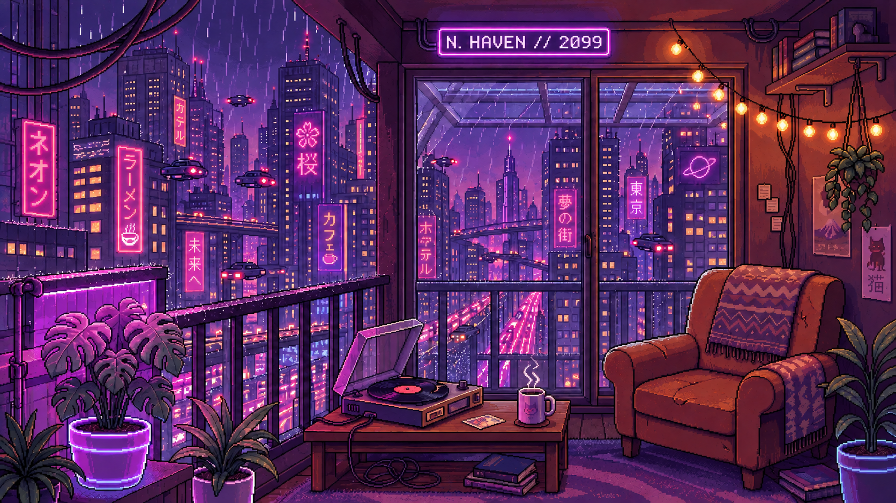

NEON HAVEN 2099 TOKYO
Твой маленький мир. Можно никуда не спешить.
Midnight in Shinjuku
НОЧНЫЕ ЗВУКИ
夜の隠れ家NEON
Исследуй предметы вокруг.
NEON
HAVEN
Дождь за окном.
Тёплый чай. Сонный кот.
Исследуй предметы вокруг.